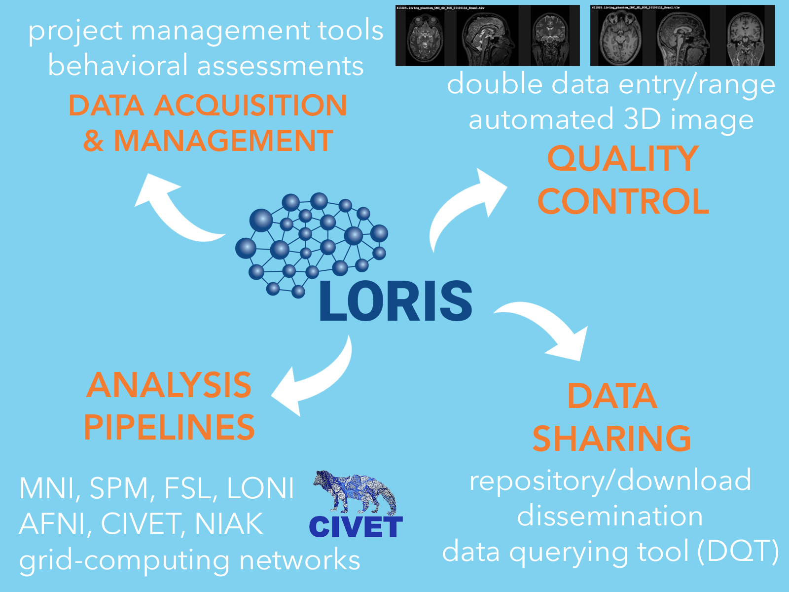
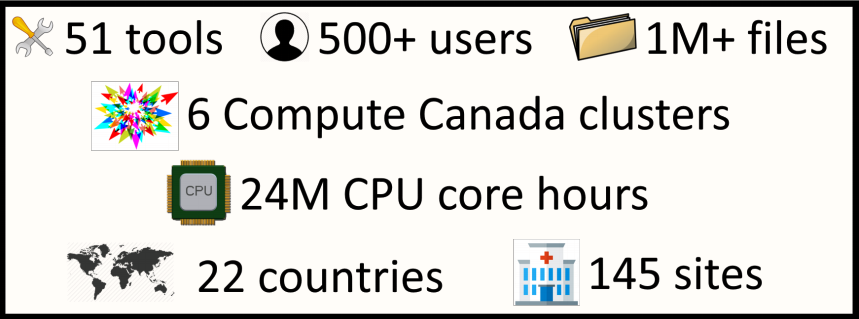

THE MNI Ecosystem
Database management and processing ecosystem for data-sharing initiatives |
|
NOVEMBER 2017 Samir Das McGill Centre for Integrative Neuroscience |

|

|

|
THE MNI Ecosystem
Database management and processing ecosystem for data-sharing initiatives |
|
NOVEMBER 2017 Samir Das McGill Centre for Integrative Neuroscience |
|
|
|
|
THE MNI Ecosystem
Database management and processing ecosystem for data-sharing initiatives |
NOVEMBER 2017
Samir Das
Director of Technology
McGill Centre for Integrative Neuroscience
Montreal Neurological Institute
|
|
|
|

|
THE MNI ECOSYSTEM

|

|

|

|
What’s involved?
Longitudinal Acquisition, Storage and Curation, Interoperability, Reproducibility, Transfer, Anonymization, Security, Privacy, Ethics, APIs, Validation, Quality Control, Protocol Checking, Preprocessing, Analysis, HPC, Provenance, Ontological Standarization, Data Harmonization, Upgrades, Maintenance, Bug Fixes, User Interface, Javascript, Bootstrap, Tracking, Extensibility, Data Management, Summary Statistics, Workflows, Development, Tool Integration, Data Sharing, Download, Multi-Modal Linking, Querying, Image Processing, Visualization, Networking, System Administration, Partnerships, Funding, HR ...No big deal!
LORIS-CBRAIN INTEGRATION
Benefits vs Challenges

WHAT IS LORIS?
|
“LORIS is a modular and extensible web-based data management system that integrates all aspects of a multi-center study: from heterogeneous data acquisition (imaging, clinical, behavior, genetics) to storage, processing and ultimately dissemination.” |

|
WHAT IS LORIS?
|
|
“..is a modular and extensible web-based data and project management software for neuroimaging research studies. It is an OPEN SOURCE framework and database suitable for managing large datasets.” |
Heterogenous data acquisition |
|
Storage, processing & dissemination |

What does LORIS do?

What does LORIS do?
Extensible and modular design


|


|
What does LORIS actually do?
DATA ENTRY
|
Heterogenous Data
Imaging Data
1. Acquisition & Storage
2. Visualisation:
Imaging Browser, BrainBrowser3. Quality Control:
Radiological Review Module, DCC MRIData Querying
- Imaging Statistiscs
- Data Querying Tool (DQT)
WHAT IS CBRAIN?
|
“..is an OPEN SOURCE web-based collaborative High-Performance Computing (HPC) platform for neuroimaging research, connecting researchers to the tools required to handle large datasets.” |

|
|
What does CBRAIN do?
..enables distributed execution of software pipelines
..aggregates multiple distributed file systems into uniform view
NOW
611 users; 199 international
191 sites
299 countries
CBRAIN Computing Resources
CBRAIN portal

TRY ME!
NIAK

BrainBrowser
..a set of web-based 3D visualization tools primarily used for viewing neurological data i.e. MRI scans.
It allows for real-time manipulation and analysis of 3D neuroimaging data through any modern web browser.
|
|
|
Brainbrowser

TRY ME!

|

|
|


|

|
|

Quebec Parkinson Network


|
|

|
|

|
BigBrain - high resolution reference brain
Multimodal integration into an anatomically realistic standard space
Years of development
20 micron resolution
7404 histological slices
1 Terabyte dataset
Available freely at https://bigbrain.loris.ca
Healthy Brains for Healthy Lives (HBHL)
An interdisciplinary program at McGill University leveraging neuroinformatic technologies to transform terminal or life-long afflications to treatable or even curable conditions


Data Sharing
Data Sharing Issues
| Benefits | Hurdles |
|---|---|
| More citations | Fear |
| Reduces waste/duplication | Technical challenges |
| Increased exposure | Privacy concerns |
| Access to larger datasets | Data Harmonization |
| Access to rare data | Interoperability |
| Less attrition | Reproducibility |
| Increased validation | Obtaining ethics |
| Saving Tax $$/more funding | Public dataset not identical |
Global Data Sharing Initiatives

Interoperability

Collaboration with global data sharing groups
INCF, Open Science Framework, NITRC, Allen Institute, NDAR, HAWG (Atlas Building Group), Organization Human Brain Mapping, Human Brain Project, Compute Canada, Maelstrom, Edinburgh BRAINS ImageBank, COINS, XNAT, VIP, BrainCode, BIDS, NIDM, NeuroDevNet, GUSTO, QPN, Boutiques, VIP

|
Important value of hackathons to data sharing initiatives 
|
Hackathon Accomplishments
- Automated PET recognition module
- Enhanced DICOM anonymization - making use of PYDICOM
- Installed one and half instances of LORIS
- Built bridges between various development groups
- I got smarter
Automated PET recognition

Automated PET recognition

Enhanced DICOM anonymization
- Going dcmtk free -- PYDICOM
- CONDA
- Satra knows everything!!
Enhanced DICOM anonymization

Open Science
|
|

|
Open Science

Cyberinfrastructure

Cybersecurity

Open Science Functionality
| Acquisition & Storage | Dissemination & Analysis |
|---|---|
| Organized/Accessible data | Centralized repository |
| Long term storage | Provenance Capture |
| Quality Control mechanisms | API for interoperability |
| Web visualization | Consent is factored in |
| Tablet/Mobile Friendly | User account access control |
| Anonymized automatically | Completely de-identified |
| Cross-modal linking | Cross-study correlation |
| Online Data Querying | Access to high performance computing |
LORIS Biobank instance

LORIS Imaging instance

Benefits of Open Science
| Organized/Accessible data | Greater exposure |
| More collaborations | Data validation |
| Access to Quality Control results | Access to larger datasets |
| More citations | Greater funding |
| Cross-modal linking | Cross-study correlation |
| More robust findings | Greater reproducibility |
What have we achieved?
1999: MNI ecosystem implemented for NIH multisite MRI Study of Normal Brain Development
2015
LORIS: 130 sites worldwide, 30,000+ data collection time points, 500+ behavioral instruments, 30+ TBs imaging datasets, 200,000 acquisitions
CBRAIN: 300+ users,
60 cities, 20 countries,
diverse projects:
Prevent AD,
K-ADNI,
MAVAN,
NeuroDevNet,
130 virtual sites,
600+ TBs storage grid across 25 servers!
National Network

|

|
Including "Data Publishing"

Future Direction
- Phase 2 LORIS/CBRAIN connectivity
- Enhanced API
- Additional modalities (eg. MEG/EEG)
- Institutional requirements
- Enhanced visualization
- Numerous new modules
- Biobanking Tracking
- Interoperability!
- Pipeline reproducibility
- Cloud technology
- Flexibility in storage, sharing, and remote processing!

Acknowledgments
Alan Evans, Alex Zijdenbos, Reza Adalat, Penelope Kostopoulos, Louis Collins, Vladimir Fonov, Marc Rousseau, Tarek Sherif, Pierre Rioux, Nic Kassis, Leigh MacIntyre, Claude Lepage, Ilana Leppert, Carolina Makowski, Natasha Beck, Tristan Glatard, Bert Vincent, Lindsay Lewis, Alden Woodward, Sylvain Milot, Jean Francois Malouin
LORIS Developers: Dario Vins, Jonathan Harlap, Matt Charlet, Andrew Corderey, Sebastien Muehlboeck, David Brownlee, Zia Mohades, David MacFarlane, Cecile Madjar, Mia Petkova, Christine Rogers, Rathi Gnanasekeran, Justin Kat, Nicolas Brossard, Tara Campbell, Jordan Stirling, Mouna Safi-Harab, Greg Luneau, Rida Abou-Haidar, Daniel Kroetz, Pierre-Emmaunel, Tom Beaudry, Shen Wang, John Saigle, Santiago Paiva, Xavier Lecours-Boucher, Stella Lee, Najmeh Khalili-Mahani, Sruthy Mathew, Zain Virani, Meaghan Evans, Liza Levitis, Angie Mosquera, Samira Haikel, Henri Rabalais & Zaliqa Rosli

|
Thank you!Acknowledgements: Alan Evans, Alex Zijdenbos, Dario Vins, Jonathan Harlap, Matt Charlet, Andrew Corderey, Sebastian Muehlboeck, Reza Adalat, Louis Collins, Vladimir Fonov, Marc Rousseau, Mia Petkova, Rathi Gnanasekaran, David Brownlee, Tarek Sherif, Pierre Rioux, Nic Kassis, Leigh MacIntyre, Claude Lepage, Ilana Leppert, Natasha Beck, Tristan Glatard, Bert Vincent, Lindsay Lewis, Najma Mahani, Elodie Portales-Casamar, Alden Woodward, Sylvain Milot, Jean Francois Malouin, Sylvain Baillet, Daniel Kroetz, Martin Weiss, Mathieu Desrosier, Jason Karamchandani, Amit Bar-Or, Ted Fon, John Brietner, Derek Lo, Patrick Bermudez, Chris Steele, Pamela Patterson and one of my favourites: Pierre Bellec! LORIS team on left |